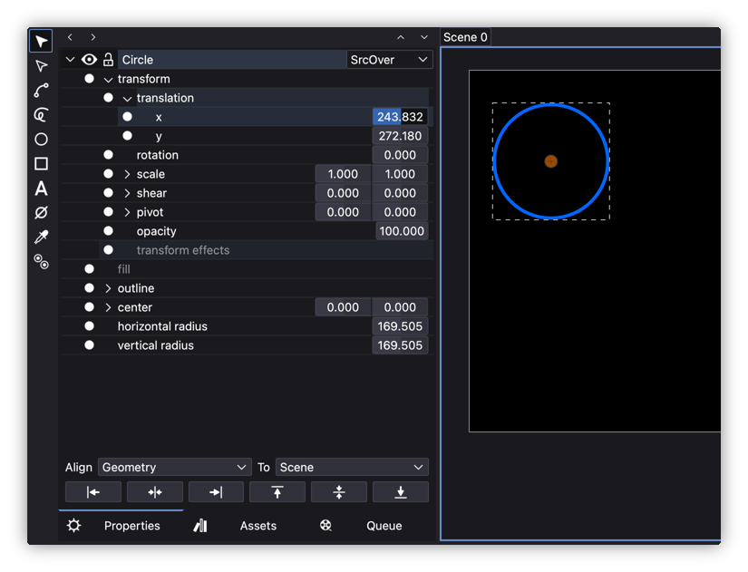
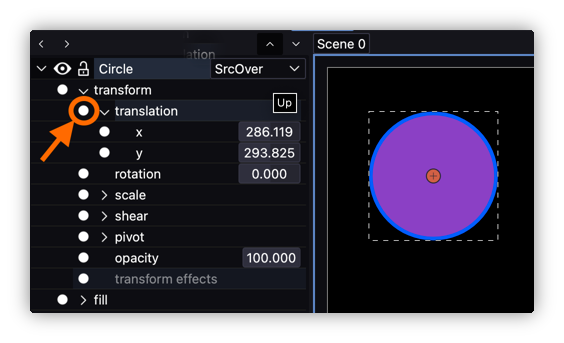

Basic Usage
- Basic Usage
After learning how the User Interface works, it is time to create a project, create or add some assets and start animating them.
It is important to understand that Friction is not a vector or raster drawing software but an animation one.
Sure it can create some basic vector based shapes such as rectangles, squares, ellipses, circles, shapes based on nodes and Bezier curves, hand drawn curves or even it’s possible to import bitmap images (raster) but there are lot of drawing tools that a regular designer would miss inside Friction if he insists on looking for them. Being that said, it is highly suggested to design the assets out of Friction and then import or link them into the software.
Some suggested tools for designing assets could be the following:
- Vector graphics design
- Inkscape
- Affinity Designer
- any software capable of exporting to SVG vector graphics file.
- Bitmap graphic design
- Krita
- Gimp
- Affinity Photo
- any software capable of exporting to JPEG, PNG or WEBP image files.
Project and first scene creation
After opening Friction, the Canvas panel will prompt the user to:
- New: create a new project.
- Open: open an existing Friction project choosing it using your OS file browser.
- Recent files: open an existing Friction project previously opened. Click the button to get a list of the available projects ordered by date (newest to oldest).

Assuming it is the first time the user opens Friction, click on New to create a new project. A window will popup showing the Scene Properties:

An unique Friction project is capable to have any number of scenes but the first time a project is created it prompts the user to create the first one.
It is possible to set the parameters that define a scene (them all could be modified later):
- dimensions of the canvas: Width and Height expressed in pixels
- Duration of the scene: setting the first frame (usually 0) and the last one expressed in
framesorseconds. Take into account that Friction internally works ifframesso if the user selectssecondsit will use the following parameter, FPS, to make the conversion intoframes. - FPS (Frames Per Second): number of frames per second.
- Background: a RGB color that defines the background scene color. Note that it allows setting a “transparent” color by setting the
Alpha colorto 0.
Pressing the ... buttons will list some default and commonly used values or custom ones used in previous projects.
When happy with the settings, the user can press on OK to create the very first scene.

At this point other panels and all tools are enabled to let the user start creating or adding (importing or linking) assets to the scene canvas.
Canvas zooming and panning
As in other 2D graphical software the canvas can be navigated with two types of movements:
-
Pan: click and drag with the middle mouse button or use two fingers on your trackpad.
-
Zoom: use the mouse wheel or using two fingers on your trackpad “pinch in” to zoom in or “pinch out” to zoom out.
Note: Gestures are only supported on macOS at the moment.
In View > Zoom there are additional ways of navigating the canvas such as Fit to canvas or Reset Zoom and them all can also be triggered using Keyboard Shortcuts.
Creating assets
It’s possible to create basic shapes using Friction Tools panel. If it’s the first time try creating a rectangle (shift + drag to create a square) or an ellipse (shift + drag to create a circle) by clicking and dragging the mouse pointer while in the canvas. Release to finish the creation of the shape.
These shapes are vector graphics so they can be edited afterwards so change to the Object selection tool and then select the shape. Now:
- in the Properties panel: and expanding the item it is possible to browse and change all the parameters that define the shape.
- in the Fill and Stroke panel: it is possible to edit the fill type, color and some parameters related with the Fill and Stroke of the shape.
- in the Timeline panel: it is possible to browse and change all the parameters that define the shape in a similar way than in the Properties panel but here with the timeline to the right so that those parameters can be animated in time and more.
For instance, go to the Properties panel expand the shape to Shape > transform > translation > x and change the values so that the shape moves near the right side of the canvas.

Now, go to the Fill and Stroke panel and under Fill change the type from none to fill and move the color channel sliders to select a nice color.

Importing and linking
As commented previously, Friction is not a vector graphics design software but an animation one so is highly suggested that assets are created externally.
There are two ways of importing assets:
-
Import: if the asset is
SVGwhen using this option the shapes will be imported inside the project. It will be able to modify colors, shapes, etc. within Friction. -
Link: if the asset is a bitmap graphics one (
JPEG,PNG,…) or evenSVGvector, if using this option, they will be linked or externally referenced. A transform parameter will be added but the assets won’t be able to be edited within Friction. The great advantage of using this method is that they can be modified externally and the results will be automatically updated in Friction. Each linked asset will be registered in the Assets Panel and from there it will be able toreload,replaceorremovethe asset.

Both options can be found in the Main toolbar or under File menu.
Bitmap graphics will always be linked, even if they are added with the Import option as there are no tools for editing pixel base images within Friction.
Assets can be added by “drag & drop” from any file explorer to Friction canvas and they will be imported if possible (SVG) and linked if not (JPEG, PNG,…)
Basic animation
Keyframes
Any object, shape or in general, any parameter of them could be animated using the keyframes technique. There is no need to animate each frame but the important positions or values they will take over time, frames in the middle will be interpolated automatically.
For instance, select a shape, object, image, etc. already in the canvas, expand it properties to see Object > Transform > Translate > x. If the value is changed the position of all the frames of the scene will be updated unless the “animate value” button is activated:

Once pressed the “dot icon” will turn from white to red color which means that value is animated. An alternative way of activating it is by selecting the parameter, opening the contextual menu with the secondary mouse button and selection the Add Key(s) option.
At the same moment the animation is activated, a keyframe icon (circle) will appear at the timeline right at the frame the time line is placed.
Following the example, if a keyframe for Object > Transform > Translate > x parameter is created at, for instance “frame 0”, then move the time line to another frame, for instance “frame 30”, and there change the value of the parameter, it can be done in different ways:
- changing the parameter value with the numerical field
- moving the object to a different place in the canvas, that is, a place in the canvas with different
xvalue. - if the time line is in a frame with no keyframe but the user wants to add a keyframe with the same value that is taking in that exact frame, open the contextual menu with the secondary mouse button and selection the
Add Key(s)option - finally, the user can use the
Insertkeyboard button
Individual keyframes can be removed by pressing Delete or using the contextual menu.
If the user wants to completely delete all the keyframes of the parameter, just press the red icon again and it will turn back to white meaning the parameter is no longer animated and it will take a single value along time. Note that the value it will “choose” to have will be the one taking and the frame where the time line is placed at the time the red button is pressed.
Timeline
The Timeline panel will be so helpful to see where the keyframes are placed along time and easy to remap their position in time as it is possible to click and drag them and move them to another time.
In this panel, it is possible to copy, paste and even duplicate keyframes to new frames just by placing the time line in the desired frame and running the command.
Graph view
The interpolation between keyframes is linear by default, but this can be changed with the Graph view as it adds the possibility to edit the “speed” and evolution of the value animation from one keyframe to the other in a graphical way.
In order to activate it, it is needed to select at least one parameter (if more than one just add more to the selection using the Shift modifier, a color between the “activate animation” button and the parameter label will show the color of the graph curves) in the Timeline panel (it doesn’t work in the Properties panel as there is no timeline in that panel) and press the Graph view icon:

Once the Graph view is activated this is what it would look like:

It possible to select the keyframes (or nodes now as the curves are Bezier curves), turn on their tangent handles and some more by using the following buttons placed on the right-bottom of the graph view:

From left to right:
- Easing modes: some presets to easily animate the movement between two keyframes. It could take into account left (
in) and/or right (out) nodes of the segment. Check the available ones here. - line segment: default “curve” between keyframes.
- curved segment: make the nodes (or keyframes) handles appear
- symmetric handles: make left and right handles symmetric
- smooth node: turn from corner to smooth handles, in this mode left and right node handles share the same tangency angle.
- corner nodes: turn from smooth to corner handles, in this mode left and right node handles have independent tangency angles.
- vertical fit view: fits all the keyframes (or nodes) in the view
- horizontal fit view: fits all the selected keyframes (or nodes) in the view. If none selected it will fit the whole scene.
Example of keyframes with smooth handles:

Preview

There are some ways to preview the scene animation within Friction:
- Manual scrubbing the “time line” by dragging it left or right, this is not really a “mode” but it is very commonly done by animators.
- Preview Cache: playing the animation pressing the “Play” button on top of the time line. By default this preview will be rendered into a temporal cache and then played at realtime.
- in editor Preview: if
View > Preview Cachemenu checkbox is disabled, then the animation will be played without caching it, that is faster to play but it may be not in realtime as it will be dependent of your hardware (in case your computer is not capable of rendering all the frames at the scene FPS) so, it is possible that this preview is not played at realtime. The benefit of this mode is that selected objects will show their bounding boxes, pivots points, etc. and that may be interesting for the animator to check how the animation is performed. - SVG Preview: in case the animation is designed inside all the features of SVG animation, it is possible to run the
Preview SVGbutton in the Main toolbar and preview it in the default SVG player of the computer (probably an Internet browser).
Saving the project
At any time, Friction lets users save the project into a file with .friction extension. Everything but linked assets will be saved inside the document. The file is binary so it can not be read with text editors but this may change in the future as there are plans to move into a text based project file.
Export
The Export feature let users publish the project animations (bundled into scenes) to media files. There are 2 main ways of exporting:
Animated SVG
This option will create an animated SVG file using the non yet deprecated SMIL (Synchronized Multimedia Integration Language) format. This format is mainly useful for web design as it creates lightweight files that are compatible with most Internet browsers and devices.
In order to export into SVG users will find 2 options:
- Preview SVG: it will export and preview the file in your default Internet browser. It’s a very useful and fast way to quickly preview the animation.
- Export SVG: a new window will show up with options to generate the final SVG file. Among the self-explanatory options there is
Optimize for Webthat reduces the file size andMix Blend Modesthat enables Layer color blending to the final SVG file usingCSSrules.

Both options are available in the Main Toolbar
Important note: not all Friction features are compatible with animated SVG (and probably some are not implemented into the exporter yet). There is more information in the Export chapter.
Rendered animation
The second way of exporting is the conventional rendering of the scene animation into a video and/or audio format.
In order to config the export, users should open the Queue panel and set:
- Scene Properties: if they are correctly set and there is no need to trim, adjust or choose the
IN/OUToption, this option could be skipped. - Profiles: saved profiles are convenient for choosing video/audio, format, codecs and their settings.
- Format: in case of the need of manually changing the setttings here is the place to do it.

For more information about all exporting options there is a whole section about Export options.
Advanced
Effects and shaders
Using the previously commented features will let animators create pretty rich and complex animations but with the following features the animation process can be simplified in some cases and/or it will be possible to create new animations that could not be done with “traditional” animation. As considered as medium to advanced features, they are hidden by default, the way to show them all or one by one is by opening the contextual menu with the secondary mouse button and activating the needed ones. Once activated, new sections will appear in the object hierarchy, and listed in the natural place:

Following the previous picture, from top to bottom:
- Custom Properties: it is able to create custom parameters to be used in the Expression editor and be able to animate or control easily how the object behaves along time. It is possible to create single or double value parameters.

- Blend effects: these effect control the layer position of objects and they are useful when it is needed to animate it so that that position changes over time.
- Interactive SVG Properties: they control the SVG playback of the object as it allows to play it when hovering with the mouse, clicking, double clicking, etc.
- Transform effects: allow to manipulate objects in terms of position, rotation, scale, and skew and using other objects as reference.
- Path base effects: are applied directly to vector paths, allowing modifications such as Displace, Spatial Displace, Dash, Duplicate, Sub-Path, Solidify, Sum, Lines, ZigZag or Subdivide.
- Fill effects: control the fill properties of shapes, including solid colors, gradients, and patterns. The effect available are similar to the Path base effects but applied to fills.
- Outline base effects: same effects that applies to the outline applied to the object. The list of effects is the same of previous type of effects.
- Outline effects: create “new outlines” and applies the selected effect. The list of effects is the same of previous type of effects.
More on this subject in separate sections Effects and Shaders.
Tools
- Null objects: Adds an invisible reference object that can be used to group or control other elements by applying
Transform Effectsin the composition.
Alignment
In the Properties panel there is a group of dropdown and buttons that allow users to align one or several objects to the chosen reference.

The options allow aligning Geometry, Geometry by its pivot and just the Pivot and keeping the geometry in place.
The destination of the alignment is called “reference” and can be Scene, Bounding box, Last selected object or Last selected pivot which references to the last selected object pivot.
The buttons let users apply the alignment to just a side Left, Horizontal center, Right, Top, Vertical center and Bottom.

Layouts

This feature lets users create and save different Canvas and/or Timelinedivisions under a name and switch from one to another. It doesn’t save panels position or visibility state (shown or hidden) but the size, number and scene applied to the Canvas and Timeline divisions:

Learning resources
This is an always growing chapter and over time new resources could be included.
It is interesting know that Friction is a fork of Enve so if you don’t find a tutorial or video explaining a feature, you might find it if you do an Internet search with the Enve keyword on it.
Tutorials
Video tutorials
- Friction 2d Beginner Tutorial - Freeware Camp
- Introduction to Friction2d (Tutorial)
- Beginner Enve Tutorials
- Beginner’s Complete Guide To Enve 2D
- Enve’s Alexander Kiryanov advanced tutorials
Other
- Friction Tips meta-thread
- Friction2d (Friction 2d) Showcase/Renders
- Expressions tutorial?
- Support of Common Expressions in Friction’s Expression Editor
- Friction discussion panel
- Friction social platforms (linked in the this web page footer)